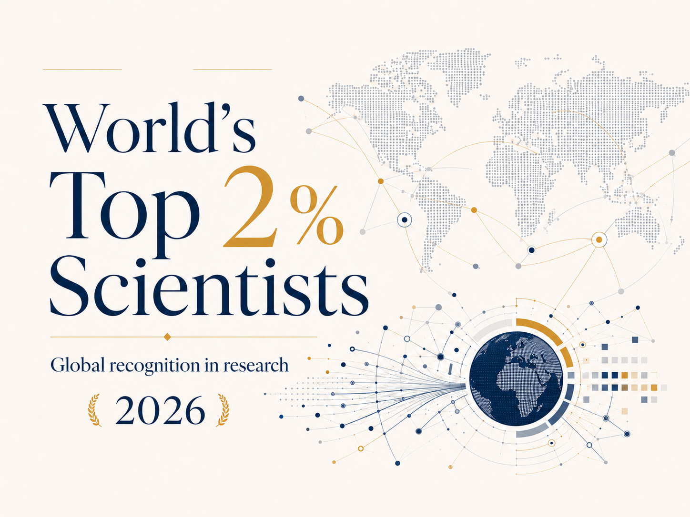

A/P Rosa ranked among the world's top 2% most-cited scientists (2026)
Recognised for the sixth consecutive year in the Stanford–Elsevier ranking of the world's most-cited scientists, based on Scopus bibliometric data across all disciplines.

World's Top 2% Most-Cited Scientists — 2026.
A/P Rosa has been listed for the sixth consecutive year among the world's top 2% most-cited scientists, in the 2026 edition of the ranking compiled by Stanford University and Elsevier.
“
Among the world's top 2% most-cited scientists.
The ranking draws on Scopus bibliometric data and spans all scientific disciplines, reflecting sustained international citation impact.